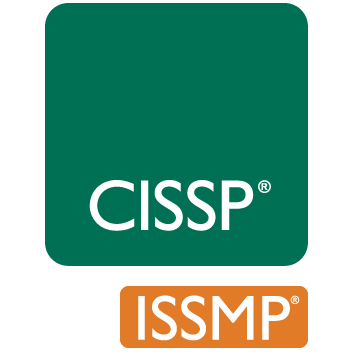
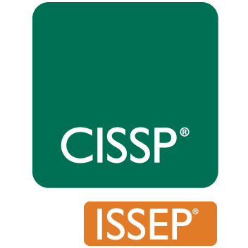
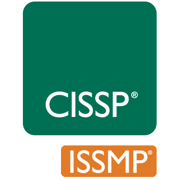
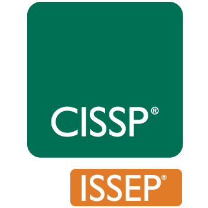
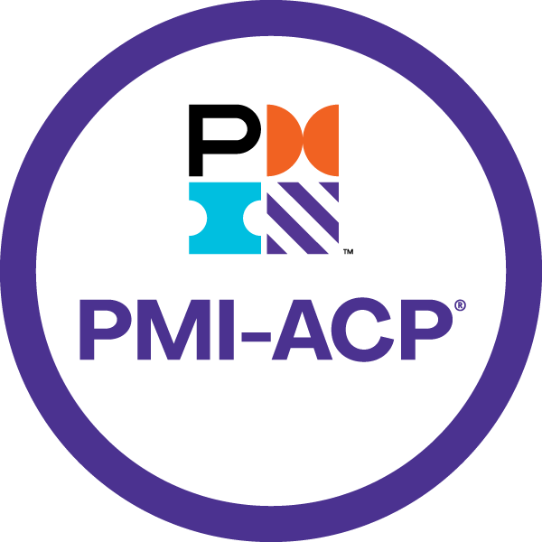

Shawn Wells
- +1 443 534 0130 (US Eastern)
- shawn@shawnwells.io
- Washington, D.C.
With 22+ years of information assurance and technical leadership experience, including being awarded the "2019 Pinacle Award for Cybersecurity Executive of the Year" by WashingtonExec Magazine, and "2014 Rising Star" by Federal Computer Week (FCW) Magazine, I help customers understand where and how cyber threats originate, build organizational capabilities to identify patterns of adversarial actions, and architect technical solutions to mitigate threat actors.
With a career focus on scaling organizational capabilities -- including pre and post-IPO startups, and business units within established firms -- I offer unique experience in building hypergrowth technical organizations. Examples include joining Red Hat as an early employee (#136!) and helping build its $540M public sector practice from scratch, and scaling CrowdStrike's partner buisiness from $20M to $250M+ in two years.
Security clearance details upon request.
Work Experiences
Global Vice President of Solution Architecture
Business Development, Alliances, and Channels
CrowdStrike
Objectives:
- Teamed with the Global VP of Partnerships and Alliances, led the global technical presales organization accountable for the entirety of CrowdStrike's $250M+ partner sourced revenue and $25M+ discrete revenue through Managed Security Service Providers (MSSPs). Scope included Global System Integrators (GSIs), Managed Security Service Providers (MSSPs), OEMs, Cloud Solution Providers (CSPs), channel partners, and technology alliance partners.
- As CrowdStrike transitioned from predominately direct-sell revenue to predominately partner sourced, ensured partner readiness to source deals, run technical pilots, and build sustainable practices around CrowdStrike offerings.
- Defined and scaled presales process and systems, including organizational design, forecasting methodology, metrics tracking and analysis, and fiscal year planning. Prepared to scale the Solution Architecture organization from 7 to 100+ associates within two years.
Results:
- Transitioned the Solution Architecture organization from an underperforming team to the highest performing presales organization at CrowdStrike.
- Increased average quota attainment of individual Solution Architects from 87% in May 2020 to 135% by January 2021.
- Took on the most aggressive annual sales target increases of any presales organization at CrowdStrike (+43% YoY, corporate average was +35%).
- Achieved the highest staff retention and satisfaction rate of any organization within CrowdStrike, with a combined planned and unplanned attrition rate of 2.3%.
- Mentored leaders of leaders; two direct reports promoted from director to senior director, one manager to senior manager, multiple individual contributors to first-time manager roles.
- Implemented organizational Objectives and Key Results (OKRs), resulting in delivery of 100% of organizational commitments with multiple initiatives mentioned on corporate earnings calls. Examples include:
- Delivered 14+ service level integrations between AWS and CrowdStrike, which resulted in CrowdStrike receiving the 2021 AWS Global Public Sector Partner Award for best cybersecurity solution, and the 2021 Canada AWS Partner Award as the ISV Partner of the Year.
- Developed anti cloud ransomware capabilities between CrowdStrike and AWS CloudEndure. This was credited by the press as contributing to raising CrowdStrike's stock by 5%.
- In support of building CrowdStrike's zero trust capabilities, created offerings and GTM strategies with Earnst&Young to combat ransomware and accelerate zero trust, delivered an integration with ZScaler for identity-centric zero trust, plus an integration with Google Chronicle to more easily analyze endpoint and workload telemetry in order to find and address threats quickly.
Senior Principal & Chief Security Strategist
Red Hat Public Sector
Objectives:
- 1 of 8 Senior Principals globally at Red Hat (out of 19,000 associates). Only senior leader dedicated to Information Assurance/Cybersecurity in Red Hat's global field sales organization.
- Build a portfolio of information assurance/cybersecurity technology initiatives that will drive future competitive advantage of Red Hat in the Public Sector vertical.
- As a member of the Office of the Chief Technologist, partnered with executive leadership to manage a $200M portfolio of strategic product sales and $700M portfolio of end-agency programs, while contributing an average 18% year-over-year growth.
- Personally accountable for all cybersecurity baselines relating to Red Hat products, as published in the NIST National Checklist Program (the U.S. Government repository of publicly available security checklists that provide low level guidance on security settings).
- Served as "trusted advisor" to Department of Defense and the National Security Agency, collaborating to establish nation-state level cybersecurity guidance and security policies on operating systems, hypervisors (IaaS), container platforms (PaaS), and middleware (PaaS) for the United States Government.
Results:
- Recruited and led Red Hat's team that published national-level guidance on operating systems, hypervisors (IaaS), automation tooling, and Kubernetes-based container platforms (PaaS). Examples include:
- FBI CJIS Compliance Profile for Red Hat Enterprise Linux
- FedRAMP for Red Hat Ansible Tower
- NIST 800-53/FISMA baselines for Red Hat Enterprise Linux
- NIST National Checklist for Red Hat OpenShift (Kubernetes)
- All DoD/DISA STIGs for Red Hat products and technologies
- Working with the product management organization, established funding and engineering processes for Red Hat Enterprise Linux to achieve multiple federal certifications such as NIAP/Common Criteria, FedRAMP, and FIPS 140-2.
- 2018-MAR-12: Red Hat Completes FIPS 140-2 Re-certification for Red Hat Enterprise Linux 7
- 2017-DEC-17: Red Hat Enterprise Linux enhances certification to Operating System Protection Profile 3.9 (OSPP v3.9).
- 2016-OCT-26: Red Hat Enterprise Linux 7.1 achieves EAL4+ under the Operating System Protection Profile (OSPP v2.0).
- Built a portfolio of information assurance/cybersecurity technology initiatives that drove competitive advantage of Red Hat in the Public Sector vertical. Examples, specific to collaborations with Intel Corporation, include:
- Software Guard Extensions (SGX): Enhancement of trusted computing by creating an execution environment that isolated compute operations from manipulation or disclosure.
- Enhanced Privacy ID (EPID): Enhance the global posture of IoT devices by establishing a standard for unique identification of devices, which can serve as basis for authentication.
- Secure Boot using TXT and TPM: Verifies boot process, enables software identification, and enforces platform boot policies. Gives the Linux community the ability to ensure their devices were not tampered with, an essential element of secure supply chains for both software and hardware.
- Developed offensive computer network operations (CNO) tools, particularly regarding tactics, techniques, and procedures (TTPs) to exploit Linux-based endpoints.
- Provided all-source intelligence analysis using HUMINT, SIGINT, and OSINT, to identify nation-state entities performing malicious acts in the open-source community; utilizing the global reach and resources available at Red Hat, helped U.S. Intelligence Community elements to identify methods, motives, and capabilities of threat actors to recognize emergent patterns and linkages to adversarial campaigns.
- Represented Red Hat in cybersecurity matters in the press, to industry analysts, and external events such as conference keynotes and presentations.
Director of Innovation Programs
Red Hat Public Sector
Objectives:
- Faced with diminishing revenue from the traditional Enterprise Linux product line, tasked by the SVP and General Manager of Red Hat Public Sector to expand Red Hat's brand identity beyond Linux (within the U.S. Government market).
- Encourage the U.S. Government to move from consumer of open source to collaborator. Chartered to collaborate with the Government on "Radical Innovations," defined as technologies that were new to existence, and "Next Generation Offerings," which pushed existing technologies into different operating windows
Results:
- As a direct report to the Vice President of Public Sector Business Development, and measured on top-line business development goals, assisted in the delivery of $256M against $247M system integrator/"sell-through" quota (104%) plus $636.5M against $651M government/"sell-to" quota (98%) while in the role.
- Successfully partnered across defense, intelligence, federal, and civilian submarkets in the creation, and further productization, of several net-new capabilities that expanded Red Hat's brand awareness beyond Linux.
- An industry first, collaborated with Lockheed Martin to create a supercomputer capable of simultaneously processing data at multiple classification levels. Saved ~$25M+ in computer hardware costs for a U.S. Intelligence Community customer which was reinvested into consulting services.
- Prepared Linux for use in tactical vehicles and unmanned aerial vehicles (UAVs) for the U.S. Army, pushing Red Hat into the automotive and aviation markets.
- Awarded "2014 Rising Star" by Federal Computer Week (FCW) Magazine for partnering with NSA Information Assurance and NIST to develop cybersecurity compliance automation tools and content. This automation was fundamental in helping the U.S. Government prepare for DevOps; prior solutions required manual cyber compliance reviews that would fundamentally prevent the government from adopting continuous integration and continuous delivery (CI/CD).
Technical Director of U.S. Intelligence Programs
Red Hat Public Sector
Objectives:
- Red Hat's revenue from the U.S. Intelligence Community was primarily from the National Security Agency (NSA). Asked to expand Red Hat's technical initiatives across all elements of the United States Intelligence Community and build a sustainable business.
Results:
- Recruited and shaped technical pre-sales team. This included staff management, budgeting, territory planning, process development, customer escalations, product management liason, and forecasting.
- Delivered $49.25M against $49.29M total quota (99.9%) while realizing an average 222.97% YoY quarterly revenue growth.
- Partnered with DoDIIS Software Licensing Team to establish first Red Hat Enterprise License Agreement (ELA) with the Defense Intelligence Agency (DIA). Awarded Red Hat's "Public Sector Deal of the Year" award.
- Negotiated with CIA Software Acquisition on the first Red Hat Blanket Purchase Agreement (BPA) for use across all directorates of the Central Intelligence Agency.
- Worked with the FBI National Data Exchange (N-Dex), a multi-year effort to gather crime and incident data from 18,000-plus law enforcement agencies into a single, web-accessible investigative tool. Solution delivered 99.8% uptime, over 3,000 concurrent users, and scaled to ingest over one million new records per day. Customer go-live was covered by Government Computer News Magazine.
Global Practice Lead of System z Sales, Strategy, and Marketing
Red Hat
Objectives:
- Red Hat faced increased competitive pressure in the Enterprise Linux market from Novell SuSE, a competing Linux distribution. The majority of Novell SuSE's revenue originated from selling Linux to IBM System z (mainframe) customers.
- Chartered to remove Novell SuSE's final foothold in the Linux market and ensure Red Hat's leadership in the IBM System z space.
Results:
- Built international team that developed and executed Red Hat's go-to-market strategy for the IBM System z platform. Delivered an average of 7.7% of Red Hat's quarterly global revenue while averaging 127% quota attainment while in role.
- Increased annual System z platform gross revenue from $5.2M to $34.9M (+570%) by diversifying sales from predominately operating system products to include Java middleware and systems management.
- Focused on international growth, delivered +190% YoY growth in EMEA, +273% YoY growth in APAC, and +64% in Americas.
- Increased Gartner-estimated Linux on System z market share from 18.36% to 45.98%, reflecting the sale of more net-new Red Hat deployments than net-new IBM hardware sales (delivering on the commitment to rapidly displace Novell SuSE).
- Worked with Product Management to redesign Linux for System z engineering processes. Efficiencies led to per-unit net revenue (margin) increase from $3,024/year to $10,530/year.
- Established net-new reference customers across global sectors including government, manufacturing, banking, insurance, and other key industries, such as:
Certifications
Data Science
| NVIDIA |
NVIDIA Certificate of Competency Fundamentals of Deep Learning for Computer Vision |
Cybersecurity / Information Assurance
| CrowdStrike | |
| ISACA | |
| ISC2 |

 



|
Project Management
| ScrumAlliance |
|
| Project Management Institute (PMI) |

|
Education
IN PROGRESS
|
|
Harvard University |
|
|
|
Western Govenors University |
|
|
Imperial College of London |

COMPLETED
|
|
National Cryptologic School267 credit hours of combined classified and unclassified graduate and doctoral level training through the National Cryptological School at Fort Meade / National Security Agency. Focused on Global Networks, Operational Assurance, Information Assurance, and Operational COMSEC. |
|
|
|
Carnegie Mellon University, Heinz
College |
|
|
|
Georgetown University, School of Continuing
Studies |
|
|
|
MIT, Sloan School of Management | |
|
|
MIT, Sloan School of Management |
|
|
|
Stanford University, Center for Professional
Development |
|
|
|
Western Govenors University |
Press, Media, Public Speaking
Extensive experience speaking to the press, giving televised interviews, and conferences (keynotes and technical sessions).
Refer to https://speaking.shawnwells.io/ for speaking sessions, videos, and PDFs.